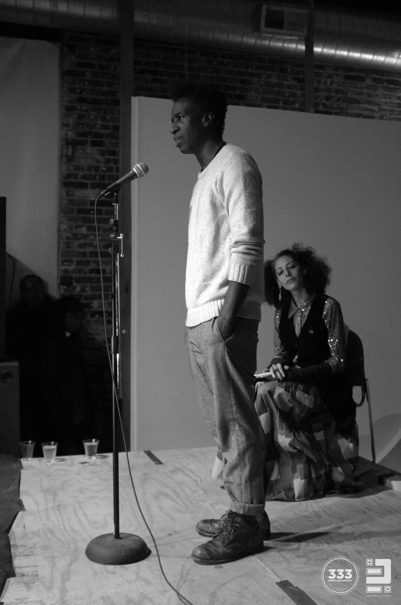
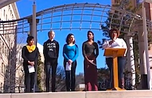

We are thrilled to have kicked off 2015 with three huge successes in our work to organize, train, and grow a diverse nonviolent movement!
Successful Fundraiser for Ferguson!
Last week, FOR-USA hosted an incredible benefit to raise funds for the Ferguson jail support and bail fund. As we reported, the fund was virtually depleted earlier this month. It now has more than $31,000 in donations to support its critical legal work!
FOR organized a headline spoken word event featuring world-acclaimed poets Suheir Hammad and Saul Williams on Dr. King's birthday, January 15, in downtown St. Louis MO.
More than $4,500 in contributions were received at the door during this amazing fundraiser.
Additionally, a FOR supporter pledged a $1,500 gift and a group of artist-activists convened by hip-hop artist Talib Kweli committed another $25,000! Wow!
Successful Launch of Campus Weekend!
From Friday to Monday, FOR's pilot Campus Weekend Program brought 23 undergraduate students and six mentors representing seven different universities and 11 spiritual identities to our Shadowcliff headquarters in Nyack NY for a rich weekend of building, resourcing, and centering in the spirit of #ReclaimingMLK.
Campus Weekend was a sacred time of building a community of struggle, thanks to the authenticity, passion, and commitment of each of our incredible student and mentor participants as well as the loving guidance of our workshop leaders and collaborators.
This community held space for each member to discern their personal principles and commitment to nonviolence and to affirm the active, radical, and creative nature of nonviolence rooted in deep abiding love.
Student and mentor participants alike are continuing to stay in contact with each other and FOR, affirming the impact of a weekend immersion to found resources and support for their plans to affect change on their campuses and beyond.
.JPG)
We are filled with gratitude for our partners in this program: the Rockland Coalition to End the New Jim Crow's Cynthia Williams, Stony Point Center, The Peace Poets, and you -- our FOR community of support -- for making this program possible and successful.
And we are excited to grow this program! If you are part of or know of a group of engaged, active students who may be interested in participating in another Campus Weekend in Nyack, or bringing this model to their campus, please reply to this email and let us know.
Successful Outreach on MLK Day!
On Monday, Martin Luther King Day, young leaders who had been hosted by FOR in St. Louis raised their voices in national #ReclaimMLK events.
In Asheville NC, five undergraduates from Warren Wilson College made this poignant presentation to a rally that drew more than 1,000 people. Rebecca Wilson, one of ten WWC students who participated in a pair of Ferguson trips hosted by FOR, said, "We must teach our children that they have a voice -- that we all deserve to have voices."
Lia Kaz added, "The Movement lives because we live. We must love the humanity in each of us, if the dream is to live together."
In Denver CO, Rev. Anthony Grimes -- who traveled to St. Louis three times last fall with "Denver Freedom Riders" that FOR likewise supported through local accommodations and connections -- offered this inspirational keynote speech to tens of thousands at the Marade mobilization.
"I stand on the shoulders of Uncle Vincent Harding. [But] I am more than an echo," said Rev. Grimes. "I live and struggle and dream in Denver, Colorado where the Moment becomes Movement! We are more than an echo: let the Movement begin here!"
Thank you to all our supporters for helping FOR continue to strengthen the work of nonviolent social change throughout our nation.
In peace and gratitude,
Kristin, Gretchen, Linda, Ethan, Jonette, and the entire FOR team
Photo credits: Saul Williams and Suheir Hammad courtesy of Ernesto Pacheco/333 North Beaumont; The Peace Poets and participants in Campus Weekend, FOR; video from the Asheville rally, Ethan Vesely-Flad, FOR. |